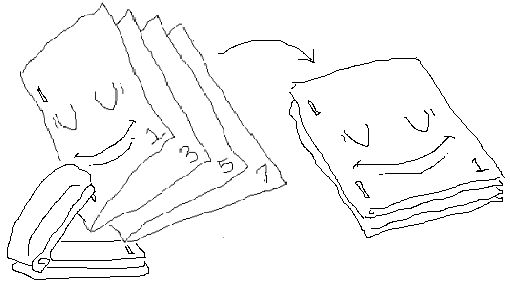

ZineBot prints half-page zine pages in the correct order / rotation for a side-staple binding, NOT a clamshell binding. This means each page is printed double-sided in order, folded individually, then stacked side-by-side, then stapled together. A clamshell binding would involve stacking pages together before folding them and requires a special saddle-stapler.
Side-staple binding can be done with any standard stapler and has the additional advantage of keeping all page-edges the same length. Clamshell binding creates uneven page edges that stick out which is referred to as 'creep' and requires a stack-cutter to remove. With all this said zine processing for clamshell binding will be added to ZineBot eventually maybe hopefully.
